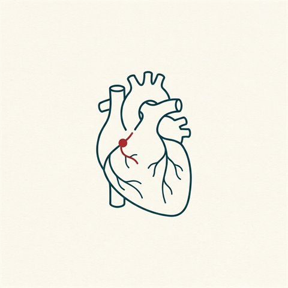
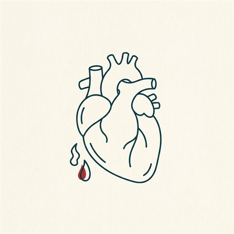
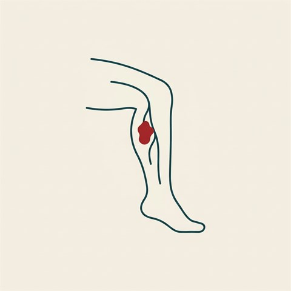
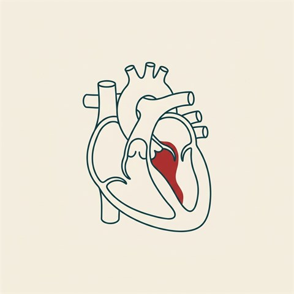

預防保健
心血管保健八要素
Life's Essential 8：四項健康行為 ＋ 四項健康因子，預防心臟病與中風的核心

危險因子
高血壓
血壓分類、為何是「沉默的殺手」、你能做到的八大生活型態改變

危險因子
膽固醇
LDL／HDL／三酸甘油酯、血脂參考數值，以及如何把膽固醇控制好

危險因子
高三酸甘油酯血症
數值分級、非常高為何會傷胰臟、與心臟病的關係，以及飲食與藥物治療

危險因子
糖尿病與心血管
為何大幅提高心臟病與中風風險、類型、共病聚集與 ABC 控制重點

疾病
慢性腎臟病
為何沉默無症狀、為何最常見死因是心臟病與中風、eGFR＋尿蛋白篩檢與現代護腎護心治療

疾病
冠狀動脈疾病
動脈粥狀硬化、症狀、風險因子、診斷、治療與預防

疾病
心臟病發作
警訊（含女性差異）、與心臟驟停的差別、發作當下怎麼辦

疾病
心臟衰竭
分類、ACC/AHA 分期、NYHA 分級、症狀、治療與預防

疾病
心房顫動
中風風險約 5 倍、症狀、診斷，以及抗凝／心率／節律三方向治療

疾病
中風
三種類型、F.A.S.T. 辨識、為何分秒必爭、風險與預防

疾病
周邊動脈疾病
間歇性跛行、ABI 踝肱指數、為何是心臟病與中風的警訊

疾病
深層靜脈栓塞
靜脈血栓、致命肺栓塞的風險、久坐久站與術後風險、抗凝治療與預防

疾病
二尖瓣膜脫垂
瓣葉脫垂與二尖瓣逆流、喀擦聲＋雜音、多數良性、追蹤與二尖瓣修補

疾病
主動脈瓣狹窄
瓣膜鈣化變窄、胸痛昏厥喘的警訊、為何一旦有症狀就需置換瓣膜（SAVR／TAVR）

治療介紹
心臟支架
支架是什麼、裸金屬／塗藥／可吸收怎麼選、放支架流程與術後吃藥照護

檢查介紹
心導管檢查
適應症、檢查流程、左右心導管差異、風險與術後照護
治療新知
可吸收支架
會被身體吸收的心臟支架、鎂合金新一代、優缺點與適合對象